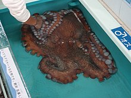
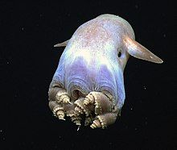
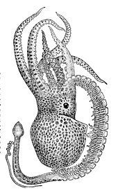
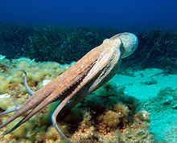

The scientific Latin term octopus was derived from Ancient Greek ὀκτώπους, a compound form of ὀκτώ (oktō, "eight") and πούς (pous, "foot"), itself a variant form of ὀκτάπους, a word used for example by Alexander of Tralles (c. 525–c. 605) for the common octopus. The standard pluralised form of "octopus" in English is "octopuses"; the Ancient Greek plural ὀκτώποδες, "octopodes" (/ɒkˈtɒpədiːz/), has also been used historically. The alternative plural "octopi" is considered grammatically incorrect because it wrongly assumes that octopus is a Latin second declension "-us" noun or adjective when, in either Greek or Latin, it is a third declension noun. Historically, the first plural to commonly appear in English language sources, in the early 19th century, is the latinate form "octopi", followed by the English form "octopuses" in the latter half of the same century. The Hellenic plural is roughly contemporary in usage, although it is also the rarest. Fowler's Modern English Usage states that the only acceptable plural in English is "octopuses", that "octopi" is misconceived, and "octopodes" pedantic; the last is nonetheless used frequently enough to be acknowledged by the descriptivist Merriam-Webster 11th Collegiate Dictionary and Webster's New World College Dictionary. The Oxford English Dictionary lists "octopuses", "octopi", and "octopodes", in that order, reflecting frequency of use, calling "octopodes" rare and noting that "octopi" is based on a misunderstanding. The New Oxford American Dictionary (3rd Edition, 2010) lists "octopuses" as the only acceptable pluralisation, and indicates that "octopodes" is still occasionally used, but that "octopi" is incorrect.

Size: The giant Pacific octopus (Enteroctopus dofleini) is often cited as the largest known octopus species. Adults usually weigh around 15 kg (33 lb), with an arm span of up to 4.3 m (14 ft). The largest specimen of this species to be scientifically documented was an animal with a live mass of 71 kg (156.5 lb). Much larger sizes have been claimed for the giant Pacific octopus: one specimen was recorded as 272 kg (600 lb) with an arm span of 9 m (30 ft). A carcass of the seven-arm octopus, Haliphron atlanticus, weighed 61 kg (134 lb) and was estimated to have had a live mass of 75 kg (165 lb). The smallest species is Octopus wolfi, which is around 2.5 cm (1 in) and weighs less than 1 g (0.035 oz).
Respiration: Respiration involves drawing water into the mantle cavity through an aperture, passing it through the gills, and expelling it through the siphon. The ingress of water is achieved by contraction of radial muscles in the mantle wall, and flapper valves shut when strong circular muscles force the water out through the siphon. Extensive connective tissue lattices support the respiratory muscles and allow them to expand the respiratory chamber. The lamella structure of the gills allows for a high oxygen uptake, up to 65% in water at 20 °C (68 °F). Water flow over the gills correlates with locomotion, and an octopus can propel its body when it expels water out of its siphon. The thin skin of the octopus absorbs additional oxygen. When resting, around 41% of an octopus's oxygen absorption is through the skin. This decreases to 33% when it swims, as more water flows over the gills; skin oxygen uptake also increases. When it is resting after a meal, absorption through the skin can drop to 3% of its total oxygen uptake.
Ink Sac: The ink sac of an octopus is located under the digestive gland. A gland attached to the sac produces the ink, and the sac stores it. The sac is close enough to the funnel for the octopus to shoot out the ink with a water jet. Before it leaves the funnel, the ink passes through glands which mix it with mucus, creating a thick, dark blob which allows the animal to escape from a predator. The main pigment in the ink is melanin, which gives it its black colour. Cirrate octopuses usually lack the ink sac.
Octopuses live in every ocean, and different species have adapted to different marine habitats. As juveniles, common octopuses inhabit shallow tide pools. The Hawaiian day octopus (Octopus cyanea) lives on coral reefs; argonauts drift in pelagic waters. Abdopus aculeatus mostly lives in near-shore seagrass beds. Some species are adapted to the cold, ocean depths. The spoon-armed octopus (Bathypolypus arcticus) is found at depths of 1,000 m (3,300 ft), and Vulcanoctopus hydrothermalis lives near hydrothermal vents at 2,000 m (6,600 ft). The cirrate species are often free-swimming and live in deep-water habitats. Although several species are known to live at bathyal and abyssal depths, there is only a single indisputable record of an octopus in the hadal zone; a species of Grimpoteuthis (dumbo octopus) photographed at 6,957 m (22,825 ft). No species are known to live in fresh water.
The scientific name Octopoda was first coined and given as the order of octopuses in 1818 by English biologist William Elford Leach, who classified them as Octopoida the previous year. The Octopoda consists of around 300 known species and were historically divided into two suborders, the Incirrina and the Cirrina. More recent evidence suggests Cirrina is merely the most basal species, not a unique clade. The incirrate octopuses (the majority of species) lack the cirri and paired swimming fins of the cirrates. In addition, the internal shell of incirrates is either present as a pair of stylets or absent altogether.
Fossil History and Phylogeny: The Cephalopoda evolved from a mollusc resembling the Monoplacophora in the Cambrian some 530 million years ago. The Coleoidea diverged from the nautiloids in the Devonian some 416 million years ago. In turn, the coleoids (including the squids and octopods) brought their shells inside the body and some 276 million years ago, during the Permian, split into the Vampyropoda and the Decabrachia. The octopuses arose from the Muensterelloidea within the Vampyropoda in the Jurassic. The earliest octopus likely lived near the sea floor (benthic to demersal) in shallow marine environments. Octopuses consist mostly of soft tissue, and so fossils are relatively rare. As soft-bodied cephalopods, they lack the external shell of most molluscs, including other cephalopods like the nautiloids and the extinct Ammonoidea. They have eight limbs like other Coleoidea, but lack the extra specialised feeding appendages known as tentacles which are longer and thinner with suckers only at their club-like ends. The vampire squid (Vampyroteuthis) also lacks tentacles but has sensory filaments. The cladograms are based on Sanchez et al., 2018, who created a molecular phylogeny based on mitochondrial and nuclear DNA marker sequences. The position of the Eledonidae is from Ibáñez et al., 2020, with a similar methodology. Dates of divergence are from Kröger et al., 2011 and Fuchs et al, 2019.
RNA Editing and the Genome: Octopuses, like other coleoid cephalopods but unlike more basal cephalopods or other molluscs, are capable of greater RNA editing, changing the nucleic acid sequence of the primary transcript of RNA molecules, than any other organisms. Editing is concentrated in the nervous system, and affects proteins involved in neural excitability and neuronal morphology. More than 60% of RNA transcripts for coleoid brains are recoded by editing, compared to less than 1% for a human or fruit fly. Coleoids rely mostly on ADAR enzymes for RNA editing, which requires large double-stranded RNA structures to flank the editing sites. Both the structures and editing sites are conserved in the coleoid genome and the mutation rates for the sites are severely hampered. Hence, greater transcriptome plasticity has come at the cost of slower genome evolution. The octopus genome is unremarkably bilaterian except for large developments of two gene families: protocadherins, which regulate the development of neurons; and the C2H2 zinc-finger transcription factors. Many genes specific to cephalopods are expressed in the animals' skin, suckers, and nervous system.
In Culture: Ancient seafaring people were aware of the octopus, as evidenced by artworks and designs. For example, a stone carving found in the archaeological recovery from Bronze Age Minoan Crete at Knossos (1900–1100 BC) depicts a fisherman carrying an octopus. The terrifyingly powerful Gorgon of Greek mythology may have been inspired by the octopus or squid, the octopus itself representing the severed head of Medusa, the beak as the protruding tongue and fangs, and its tentacles as the snakes. The Kraken are legendary sea monsters of giant proportions said to dwell off the coasts of Norway and Greenland, usually portrayed in art as giant octopuses attacking ships. Linnaeus included it in the first edition of his 1735 Systema Naturae. One translation of the Hawaiian creation myth the Kumulipo suggests that the octopus is the lone survivor of a previous age. The Akkorokamui is a gigantic octopus-like monster from Ainu folklore, worshipped in Shinto. A battle with an octopus plays a significant role in Victor Hugo's 1866 book Travailleurs de la mer (Toilers of the Sea). Ian Fleming's 1966 short story collection Octopussy and The Living Daylights, and the 1983 James Bond film were partly inspired by Hugo's book. Japanese erotic art, shunga, includes ukiyo-e woodblock prints such as Katsushika Hokusai's 1814 print Tako to ama (The Dream of the Fisherman's Wife), in which an ama diver is sexually intertwined with a large and a small octopus. The print is a forerunner of tentacle erotica. The biologist P. Z. Myers noted in his science blog, Pharyngula, that octopuses appear in "extraordinary" graphic illustrations involving women, tentacles, and bare breasts. Since it has numerous arms emanating from a common centre, the octopus is often used as a symbol for a powerful and manipulative organisation, company, or country
Danger: Octopuses generally avoid humans, but incidents have been verified. For example, a 2.4-metre (8 ft) Pacific octopus, said to be nearly perfectly camouflaged, "lunged" at a diver and "wrangled" over his camera before it let go. Another diver recorded the encounter on video. All species are venomous, but only blue-ringed octopuses have venom that is lethal to humans. Bites are reported each year across the animals' range from Australia to the eastern Indo-Pacific Ocean. They bite only when provoked or accidentally stepped upon; bites are small and usually painless. The venom appears to be able to penetrate the skin without a puncture, given prolonged contact. It contains tetrodotoxin, which causes paralysis by blocking the transmission of nerve impulses to the muscles. This causes death by respiratory failure leading to cerebral anoxia. No antidote is known, but if breathing can be kept going artificially, patients recover within 24 hours. Bites have been recorded from captive octopuses of other species; they leave swellings which disappear in a day or two.
Fisheries: Octopus fisheries exist around the world with total catches varying between 245,320 and 322,999 metric tons from 1986 to 1995. The world catch peaked in 2007 at 380,000 tons, and had fallen by a tenth by 2012. Methods to capture octopuses include pots, traps, trawls, snares, drift fishing, spearing, hooking and hand collection. Octopus is eaten in many cultures, such as on the Mediterranean and Asian coasts. The arms and sometimes other body parts are prepared in various ways, often varying by species or geography. Live octopuses are eaten in several countries around the world, including the US. Animal welfare groups have objected to this practice on the basis that octopuses can experience pain. Octopuses have a food conversion efficiency greater than that of chickens, making octopus aquaculture a possibility. Octopuses compete with human fisheries targeting other species, and even rob traps and nets for their catch; they may, themselves, be caught as bycatch if they cannot get away.
